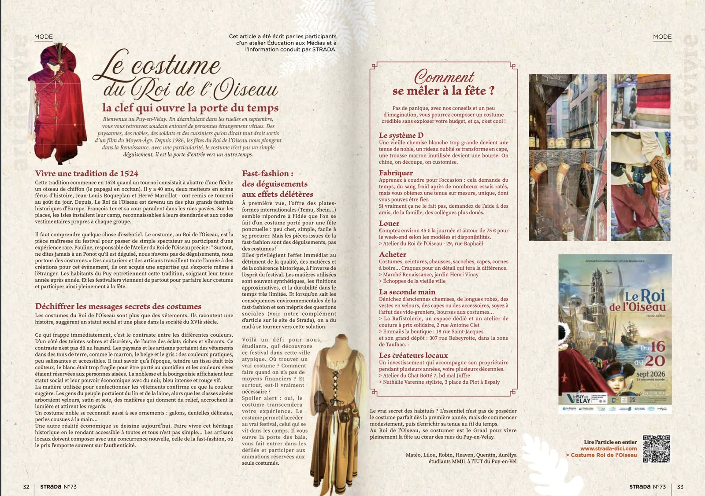

Article Strada
Article pour le magazine local Strada sur les costumes des fêtes du Roi de l’Oiseau, au Puy-en-Velay.
- Période
- Mars – Avril 2026
- Contexte
- Projet volontaire · BUT MMI 1re année
- Équipe
- 6 étudiants

Le projet
En dehors des cours, ma formation proposait de collaborer avec Strada, un magazine local du Puy-en-Velay. Je me suis porté volontaire avec cinq autres étudiants pour écrire un article sur les costumes des fêtes du Roi de l’Oiseau, l’un des plus grands festivals historiques d’Europe.
L’article s’adresse aux étudiants qui découvrent le festival : il explique ce qu’est un vrai costume du Roi de l’Oiseau, pourquoi la fast-fashion ne répond pas à l’esprit de la fête, et comment se procurer une tenue quel que soit son budget.
- 01
Enquête
Recherches, interviews d’artisans et micro-trottoirs
- 02
Rédaction
Chaque membre écrit une partie de l’article
- 03
Harmonisation
Mise en commun et ajustement du ton
- 04
Retours
Conseils de la rédactrice en chef de Strada
Ma contribution
Sans en avoir le titre, j’ai joué un rôle de coordinateur : j’ai créé un groupe de discussion et un document partagé pour tout mettre en commun, même à distance, et j’ai échangé par e-mail avec nos professeurs et la rédactrice en chef. J’ai aussi participé à chaque étape de l’article :
- Enquête : recherches d’informations et participation aux micro-trottoirs auprès des passants.
- Rédaction : partie consacrée à la fast-fashion : son fonctionnement, ses conséquences sociales, économiques et environnementales, et les costumes vendus sur ces plateformes.
- Harmonisation : relecture commune et reformulation pour que l’article garde une seule voix.